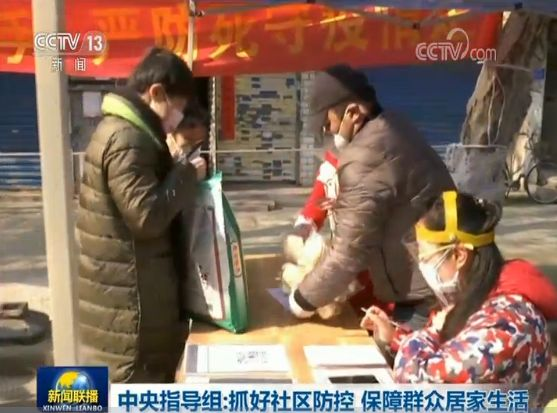

中央指导组在湖北的25天，都干了些啥
原文链接 备份链接 澎湃新闻记者 赵实 1月27日，大年初三，以孙春兰副总理为组长的中央指导组，抵达疫情的“风暴眼”武汉，对新冠肺炎疫情一线防控工作等展开全面“督战”。 在这场疫情之战中，中央指导组担当着何种定位，将起到哪些关键作用，从其 …
澎湃新闻记者 王俊
澎湃首席评论员 西坡
3月5日晚间的央视新闻联播和新华社都共同关注了一个问题。
什么问题呢？无他——武汉社区疫情防控和群众生活保障情况。
中央指导组进社区
新华社3月5日晚间从武汉发回的电稿称，社区是疫情防控的第一线。为深入贯彻习近平总书记重要指示精神，落实中央应对疫情工作领导小组部署，5日上午，中共中央政治局委员、国务院副总理孙春兰率中央指导组到武汉市青山区翠园社区、江汉区西桥社区，实地察看社区防控和群众生活保障情况。

孙春兰仔细询问社区防控的具体措施，了解社区干部、网格员、下沉干部、志愿者等的工作情况。她强调，湖北和武汉疫情防控任务依然艰巨繁重，必须持之以恒抓好社区防控工作，坚决守严守牢疫情联防联控、群防群控的社区防线。
孙春兰详细了解生鲜蔬菜、婴幼儿用品、慢性病药品等供应情况，要求千方百计做好生活物资服务保障工作，尽可能丰富品种，优化配送方式，加强对残疾人、孤寡老人等特殊困难群体的帮扶。
报道称，针对群众现场反映的困难和问题，孙春兰立即要求省、市领导深入调查，不回避矛盾，杜绝形式主义、官僚主义，要坚持务实作风，实事求是、切实解决问题，提升群众满意度。
3月5日晚间，央视新闻联播也报道了中央指导组的这一消息。
群众反映了什么问题？
事实上，这条重要消息里的一句话“群众现场反映的困难和问题”信息量很大。3月5日晚9时半，微信公众号“陶然笔记”发布文章《掩饰矛盾解决不了百姓生活保障问题》作了更为详细的披露。
根据陶然笔记的文章，从3月5日中午开始，关于中央指导组在武汉小区考察的帖子在网上流传开来，有文字也有视频。
帖子里说，3月5日早上，中央指导组在武汉市青山区翠园社区开元公馆小区考察时，有居民从家里的窗户向正在考察的中央指导组喊，“假的，假的”，主要反映的是社区物业假装让志愿者送菜送肉给业主，实际工作不到位的情况。
**
上述文章称，据陶然笔记了解，帖子里关于现场的内容基本属实。**
文章透露，孙春兰副总理当即要求省市领导深入了解情况并指出，群众有情绪很正常，这提醒我们，社区群众的基本生活保障还存在短板。不要掩饰矛盾，要实事求是，明确问题出在哪里，及时解决问题、化解矛盾，绝不能搞形式主义、官僚主义。

中央指导组又是怎么解决的？
陶然笔记在上述文章中指出，大约4个小时以后，中央指导组召集省、市有关负责同志召开专题会议。研究进一步做好群众生活保障工作，强调要打通生活物资供应和社区服务的“最后一公里”，做好社区群众的心理疏导工作，让他们居家生活更加安心。
武汉市已经派人对社区的3000多户居民逐一上门，入户调查，了解具体诉求后着手解决。
而新华社上述电稿最后也提到：“下午，中央指导组召开专题会议，研究进一步做好群众生活保障工作，强调要打通生活物资供应和社区服务的‘最后一公里’，做好社区群众的心理疏导工作，让他们居家生活更加安心。”

马上评
什么叫形式主义、官僚主义，如何破除形式主义、官僚主义，3月5日的《新闻联播》进行了最好的阐释。
报道中有一段话：“针对群众现场反映的困难和问题，孙春兰立即要求省、市领导深入调查，不回避矛盾，杜绝形式主义、官僚主义，要坚持务实作风，实事求是、切实解决问题，提升群众满意度。”
这是一次非常有意义的民意表达与对民意的回应。中央指导组去一线调查，就是为了了解真实情况，解决真实问题。弄虚作假既是糊弄市民，又是对指导组工作的干扰，幸好有那声发自本能的嘹亮呼喊，让一切都穿帮了。
通过网帖只能了解故事的一半，也就是市民如何发声，《新闻联播》将故事的另一半补全了。现在我们知道，群众“现场”反映的困难和问题，“立即”就被听到，迅速得到系统性解决。据陶然笔记微信公号，大约4个小时后，中央指导组召集省、市有关负责同志召开专题会议，研究进一步做好群众生活保障工作，强调要打通生活物资供应和社区服务的“最后一公里”，做好社区群众的心理疏导工作，让他们居家生活更加安心。这才是对待民意的正确方式。
从楼上大喊，无疑是非典型的民意表达，但它贵在真实。事实证明，真实的声音才是最有力的，才是决策最需要的参考。
关于武汉市民该不该抱怨生活中遇到的困难，一直有些争议，有人说大家都不容易，应该互相体谅。但是只有让民意充分表达，才能知道哪些问题是需要优先解决的。也只有各方将诉求、苦衷、能力边界互相交个实底，才能实现团结。让矛盾暴露出来，解决问题的途径也就会显现出来。
疫情是一面镜子，把所有人、所有事照得清清楚楚，真的假不了，假的真不了。从疫情开始到现在，从武汉、湖北到全国，每个环节每个岗位做得如何，公众心中一直有数。对于那些牺牲奉献者，人们从来不吝于褒奖，对于那些作假添乱者，人们则会径直戳穿、大张挞伐。归根结底，只需要回到“实事求是”这四个大字上来。
戳这里进入
“全国新型冠状病毒感染病例实时地图”↓↓↓
本期编辑 常琛
推荐阅读


原文链接 备份链接 澎湃新闻记者 赵实 1月27日，大年初三，以孙春兰副总理为组长的中央指导组，抵达疫情的“风暴眼”武汉，对新冠肺炎疫情一线防控工作等展开全面“督战”。 在这场疫情之战中，中央指导组担当着何种定位，将起到哪些关键作用，从其 …
原文链接 备份链接 澎湃新闻记者 林平 澎湃新闻记者：王文娟 编辑：沈鹏华 视频来源：新华视频 责任编辑：李蕊 2月20日下午，国务院新闻办在湖北武汉举行发布会，介绍中央赴湖北指导组组织开展疫情防控工作情况。 发布会上，中央指导组成员、国 …
原文链接 备份链接 非常时期，武汉成了全国人民挂念、祈福的城市。封城后，武汉人民的真实生活是什么样？ 正和岛自1月26日起特别推出《叶青：我在武汉疫区的第N天》专栏。叶青是一位定居武汉40年的市民，也是一名学者和官员。接下来的一段时间，他 …
原文链接 备份链接 【财新网】（记者 孙良滋）3月5日上午，中央政治局委员、国务院副总理孙春兰率中央指导组到武汉市青山区实地查看疫情工作，实地察看社区防控和群众生活保障情况。当晚中央电视台《新闻联播》播出了此次实地查看的情况并指出，针对群 …
原文链接 备份链接 1月23日凌晨2点的一纸封城令，让留在这个城市的900万人，不得不承受封城的集体共命。处境和遭遇的不同，让同一片封城的天空下，生发出千万种不同的生活。 当大多数武汉人以家庭为单位防御新冠的时候，还有一些少数派，以异乡者 …